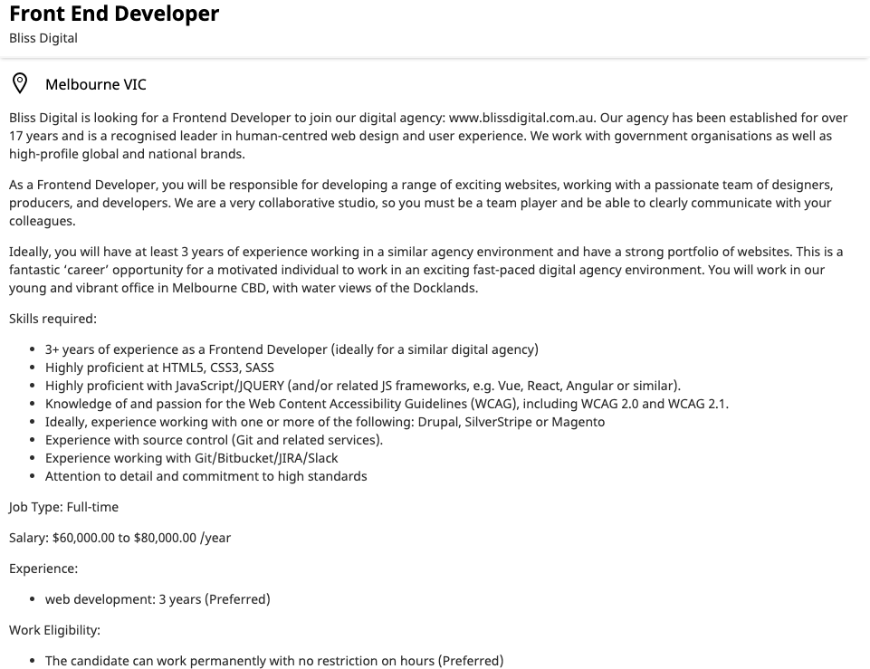
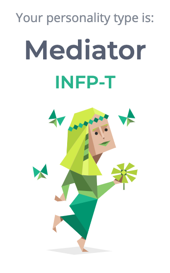
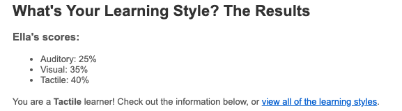
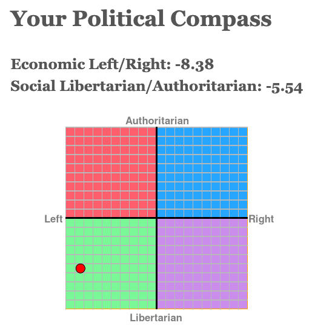

Assignment 1 - My Profile
Name: Ella WattsStudent number: s3851446Email: s3851446@student.rmit.edu.au

About Me
Hi, I'm Ella, and I live in Brisbane, Queensland, where I grew up. I'm 18, with only very little experience in IT, but I'm very eager to learn. I graduated highschool in 2018, and commenced a degree at QUT in 2019, which I did not complete. I'm now studying a Bachelor of Information Technology with RMIT. One of my hobbies is, in fact, language learning. However, English is the only language I speak proficiently, and I have an intermediate understanding of French. I plan to improve my language skills this year!
Interest in Information Technology
I am interested in IT because I enjoy problem solving and using logic-based thinking skills, but I am also attracted to the creativity that is required in some IT roles. My interest in IT started when my dad suggested I should learn some coding for fun - he currently works as an IT professional as well. My experience is limited to basic html and css courses with online learning platforms such as Codecademy, including making a visually identical (but non-functional) version of the Google homepage. I chose to study with RMIT through Open Universities Australia because I believe that the fully-online learning systems give me the freedom to juggle both my study and work commitments easily. During my studies, I hope to gain some technical skills (especially as much programming knowledge as I can), while also developing an understanding of the many aspects of the industry to help me develop marketable skillsets and find work in the future.
Ideal Job
For my, my ideal job would be employment as a web developer. An example of a job that I have found is a Front End Developer position with Bliss Digital. The company is a digital agency specializing in user experience and user interface (UX/UI) architecture.
Being a front-end developer in this situation means creating and managing code that runs the user-facing side of the sites that Bliss Digital is responsible for. This is the sort of position that interests me because I enjoy the problem-solving aspect of managing the programming, but I also enjoy the creative aspect that comes with creating the UI and creating good user experience.
The advertisement stipulates a minimum of three years experience in a similar role, as well as skill in several languages, including HTML, CSS, SASS, JavaScript and JQUERY. Other requirements include knowledge of Web Content Accessibility Guidelines (WCAG), source control, and Drupal, SilverStripe or Magneto.
- HTML and CSS are the some of the most basic building blocks of webpages.
- Sass (syntactically awesome style sheets) is a style sheet language used to program the appearance of webpages. It is a CSS extension language.[1]
- JavaScript is commonly used in webpages to manage the interactive aspects of websites[2] - JQUERY is a JavaScript library.[3]
- WCAG is a series of standards for web accessibility - including guidelines for alternate text for images and designing websites so that screen readers can interpret them, meaning that webpages are accessible to everyone.[4]
- Drupal, SilverStripe and Magneto are content management systems, which facillitate cooperative contribution to webpages, especially within an organisation.[5][6][7]
My current skills include very limited HTML, CSS and using github with command line interface. Also my portfolio consists of only one extremely basic webpage. In order to qualify for this position or similar, I will continue to simultaneously gain skills and build a portfolio by working on web design projects. I would like to prioritise finding collaborative work or projects, so that I gain experience working in a team and working with content management systems. Another option that I have is to enroll myself in some courses teaching skills such as web design or something more narrow such as JavaScript, to gain the skills necessary to start a project.
Personal Profile
The result of my Myers-Briggs Personality Test is INFP - the Mediator personality. I did the test at www.16personalities.com
The result of my learning style test is Tactile. I did the learning styles test at www.educationplanner.org
The third test I did was a politcal compass test, at www.politcalcompass.org . My results were economically left-leaning, and socially libertarian.
The Myers-Briggs test confirms some of my own feelings about my personality. I also already knew that I solidify learning much faster when I am able to interact with systems and processes. In terms of teamwork, I feel that my mediator personality type will be very useful for facilitating respectful discussion between team members, however I think that I may be at a disadvantage when it comes to being a tactile learner - since all of our discussion and work will be digital, there is not a significant tactile component. I think that my political compass results should be only very slightly taken into account when forming a team - potentially in the workplace, significantly differing political ideologies could cause problems. However, I only see this being a potential issue if the project has a political or social aspect. Also, I am aware that often in work environments, it is necessary to work with people who you may not agree with whole-heartedly in order to maintain a professional environment.
Project Idea
Overview
The IT Project that I have come up with is an automated pest-deterrent system. It’s primary purpose is to deter wildlife such as possums, foxes, birds or other small-to-medium animals from people’s backyards. In particular, it is for protecting peoples’ backyards and garden beds from pests. The device will use motion-sensing technology and a sprinkler jet to startle animals, which will discourage them from foraging, eating, and other destructive behaviours within the protected area.
Motivation
Gardening is a great way to become connected to nature. Growing your own food allows people to greater appreciate the production of food, and to help them get cheap, nutritious produce. Growing food at home also reduces food miles, which will help reduce our collective carbon footprint. However, something I have found through experience is that, wildlife – especially possums – can make this difficult as they have a tendency to munch on produce. Deterrents such as poison, traps and other harsher methods already exist, but these are more detrimental to wildlife populations and to the environment. The water jet solves this as it is much more gentle to both the wildlife and ecosystems – the jet simply startles the animals, and water is, of course, inherent part of any ecosystem.
Description
The purpose of the device is to be able to detect animal motion in a monitored area. Upon detection, the device will shoot a precise jet of water at the animal, in order to startle the animal. The precision of the device means that less water can be used (as opposed to a motion-sensing camera triggering a sprinkler, which would simply spray aimlessly in the hopes of hitting the animal). The device will involve three main components – the motion detecting cameras, a Raspberry Pi, and a water sprinkler. The first process will be detecting the animals. I hope to use two Arlo security cameras for this purpose. Arlo cameras are HD-quality security cameras with motion-sensing capabilities. They also have night vision, which is useful since a lot of wildlife – especially possums and foxes – are generally nocturnal and hence more active at night. The purpose of having the two cameras is to enable triangulation, so that it is possible to compute the location of the animal. This will allow for more precisely-targeted jets of water. The idea is that the Arlos will detect the motion, identify where the motion is (in terms of the field of the view) and relay this information to the Raspberry Pi). The Raspberry Pi will use the data sent from the Arlos to determine the location of the creature within the yard or space using triangulation. I believe that Python would be a useful language to use for programming the Raspberry Pi. This is because it can be used quite easily for both the calculations on the data from the Arlos, and it can also be used to program the robotic components which will be necessary to engage the sprinkler system. The third part of the device is the sprinkler and robotic parts which go along with it. The three parts will be a servo motor, a robotic water valve, and the sprinkler itself. The sprinkler will be mounted onto a platform which can be rotated by the servo motor. When the program run by the Raspberry Pi calculates the location of the animal, the Pi will engage the servo motor to turn the platform so that the sprinkler is facing in the desired direction. A robotic water valve will be used to control the pressure of the water. This means that the jet can be targeted at animals which are at varying distances from the sprinkler. A valve that I found which should be appropriate for the device is a Solenoid Water Valve. The Raspberry Pi will trigger the valve to open at varying degrees to control water pressure. So, in summary, when the Arlo senses motion, the Raspberry Pi will be engaged to determine the location of the motion, and will then trigger the servo motor, valve and sprinkler to ensure the water jet goes exactly where it is needed.
Tools, Technologies and Skills
The technologies required for this project are:
- The Arlo cameras
- The Raspberry Pi*
- The solenoid valve
- The servo motor
- The sprinkler
Also, it will be necessary to build the platform that the sprinkler sits on, and connect the sprinkler to power and water. Hence, the project also requires water hose and a water source, and power cords. All of the technology is quite readily accessible and non-expensive. *A note on the Raspberry Pi: since the Arlo security cameras are wireless, the Raspberry Pi will need to have Bluetooth capabilities. In terms of skills, I will need to be able to use Python for both data calculations and robotics. I will also need to be able to set up the Raspberry Pi – including creating the boot file and programming with the Linux system.
Outcome
If this device is successful, it could provide many people with a low-impact – and comparatively low-resource – pest deterrent. The animals which are eating or digging up people’s gardens will be frightened and discouraged from returning, however they will not be injured, nor poisoned. This development represents just one way we can look at becoming more environmentally conscious as a society – it will provide conscious home-owners with a way to reduce the damage they to do the environment, and will hopefully encourage people to think more about other ways they can reduce their impact.